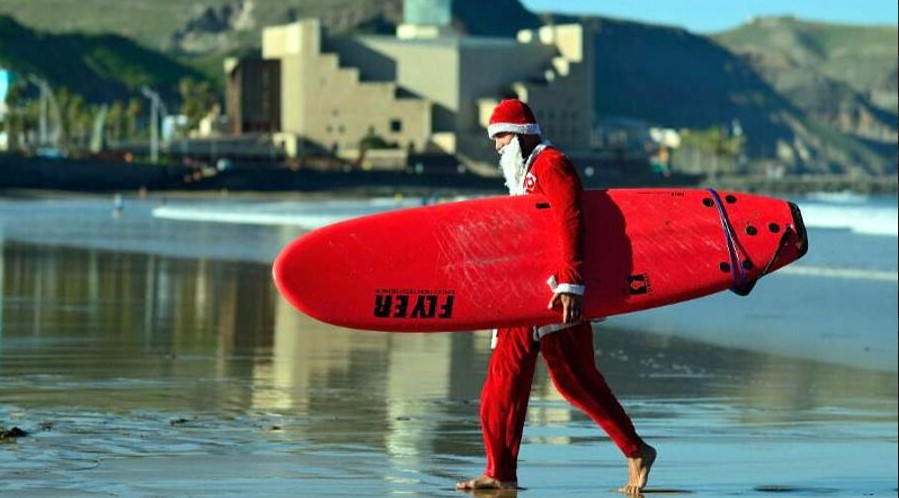

Una playa abierta todos los días del año
La playa de Las Canteras es la playa urbana principal de la ciudad de Las Palmas de Gran Canaria (Gran Canaria, Canarias).Es una de las playas más importantes de Canarias. Frecuentada durante todo el año, es la playa preferida por la mayoría de los habitantes de la ciudad y los extranjeros que la visitan, que pueden disfrutar de ella en cualquier época del año gracias a la benignidad del clima.
El nombre de la playa siempre ha estado vinculado a La Barra, una roca sedimentaria de arenisca y deposiciones calcáreas que discurre en paralelo a la orilla, proporcionándole abrigo frente al oleaje del norte y confiriéndole una personalidad propia.

Esta fue explotada como cantera para extraer la roca que se destinó, entre otros usos, a numerosas construcciones de la ciudad como la Catedral de Canarias. En recuerdo a esta práctica, ya abandonada, pervive hoy el nombre de playa de Las Canteras. La barra puede alcanzarse a nado desde la orilla cuando la marea está baja e incluso caminar por ella.
Este sitio web pretende ser una guía práctica que ayude a los visitantes a conocer las distintas áreas y actividades que pueden realizarse a lo largo de la playa de Las Canteras, y se ha realizado en el marco de estudios impartido por la UOC.